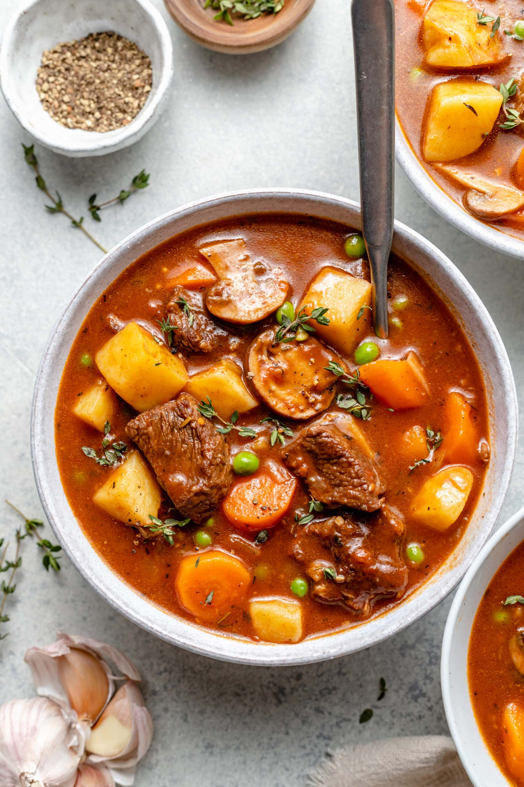

Beef Stew

Description
This easy slow cooker beef stew recipe made with potatoes, carrots, celery,
broth, herbs, and spices is hearty and comforting. You won't be slow to say
'yum'!
Ingredients
- 2 pounds beef stew meat, cut into 1-inch pieces
- ¼ cup all-purpose flour
- ½ teaspoon salt
- ½ teaspoon ground black pepper
- 1 ½ cups beef broth
- 4 medium carrots, sliced
- 3 medium potatoes, diced
- 1 medium onion, chopped
- 1 stalk celery, chopped
- 1 teaspoon Worcestershire sauce
- 1 teaspoon ground paprika
- 1 clove garlic, minced
- 1 large bay leaf
Steps
- Step 1: Gather ingredients.
- Step 2: Place meat in slow cooker.
-
Step 3: Mix flour, salt, and pepper together in a small
bowl. Pour over meat, and stir until meat is coated.
-
Step 4:Add beef broth, carrots, potatoes, onion, celery,
Worcestershire sauce, paprika, garlic, and bay leave; stir to combine.
-
Step 5: Cover, and cook until beef is tender enough to
cut with a spoon, on Low for 8 to 12 hours, or on High for 4 to 6 hours.
- Step 6: Serve hot and enjoy!